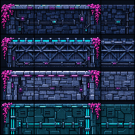
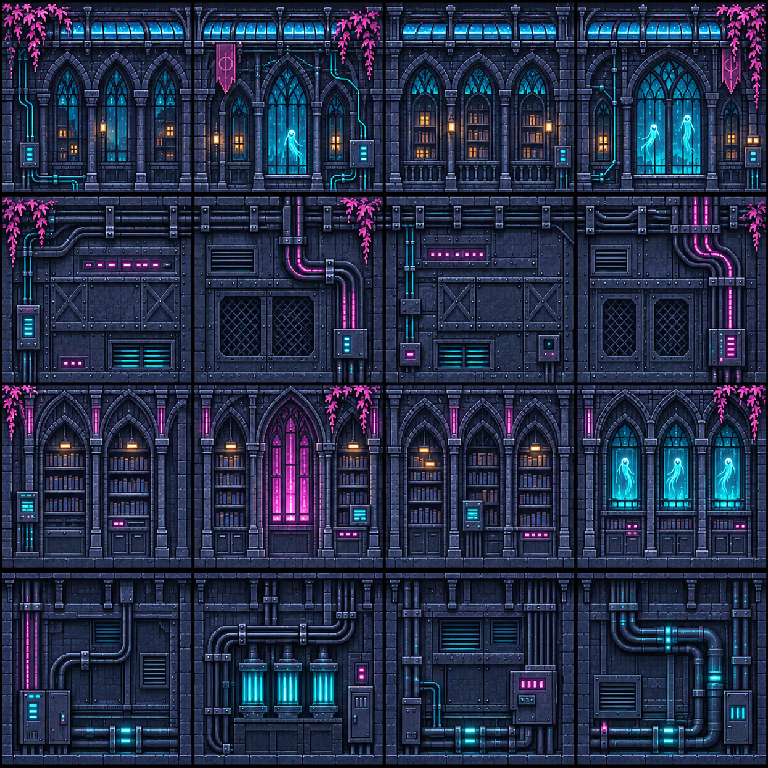

Walls and surfaces on white
Transparent sky, margins and vegetation gaps should show the selected backing. The masonry, wall interiors and metal remain solid. In game, alpha-preserving shading keeps these same openings clear.


Building shells ? v5
The wall materials intentionally fill their building footprint. Corners and cornices should show this backing around their silhouettes.


Front canopy

Water materials

Previous sheets for comparison

